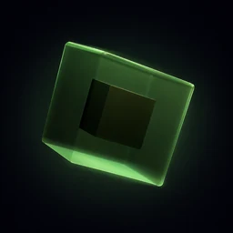

Studio I
Glass Orbit
V3 elimina i bordi della base, aggiunge superfici texturizzate e un cielo atmosferico dinamico al cubo di vetro orbitale.
- Versione
- V3 · Latest
- Durata
- 19,97 s
- Frame
- 599
- Output
- 720p · 30 fps

Orbital Glass Lab Unreal Engine 5.8Realtime worlds · cinematic studies
Due prove costruite e animate via Python e Sequencer. Esplora l'evoluzione V1–V3, dal prototipo alle superfici continue e agli ambienti texturizzati.
Studio I
V3 elimina i bordi della base, aggiunge superfici texturizzate e un cielo atmosferico dinamico al cubo di vetro orbitale.
Studio II
V3 trasforma il piano d'acqua in un oceano continuo fino all'orizzonte, con onde, texture, nuvole e piattaforme materiche.
Pipeline
Mappe, materiali, luci e attori generati nell'Editor Unreal via Python.
Camere, trasformazioni e cambi di luce orchestrati con Sequencer.
Movie Render Queue in PNG, poi codifica H.264 ottimizzata per il web.